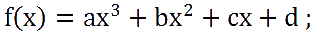

エルミート曲線軌道
・エルミート曲線
ある2点を始点と終点と見立て、
始点から終点へ移動するのを考えます。
その時直線移動ならば単純に角度と速度を与えて進めてやれば終点に着きます。
所用時間や加速度も設定してやれば物理的に自然な動きにすることも可能です。
しかし、始点から終点へ曲線軌道で着かせるにはどうしたらいいでしょう？
x,yの加速度(ベクトル)で指定すると、ある程度は曲がりますが、
終点に着かせるのが難しいし、指定時にどのような曲線を描くかイメージできません。
そこで使うのがエルミート曲線です。
エルミート曲線は始点と終点をなめらかな曲線で結ぶための補間法です。
具体的には始点と終点の2点を通る3次関数を求める方法です。
3次関数のグラフを知っているでしょうか？
(知らないなら、この先 微分あたりまでの数学知識が必要なので、ググってみてね)
その軌道を2点間に描きます。
(図は使い回しwwww)
・式の導出までの手順
エルミート曲線の指定情報は(始点、始点でのベクトル、終点、終点でのベクトル)と、あと所用時間です。
各ベクトルは最初は 始点でのベクトル 方向に飛び出していって、
曲がりながら最後に 終点でのベクトル の方向で終了します。
「どの方向にどのくらい曲げるか」をこれで指定します。
ここから少しプログラムに入っていきます。
(実際のソースは下に示しますが)
クラス Pointクラス,Vectorクラスはともに(x,y)のメンバをもつとします。(意味合いは違います)
始点・終点座標をPoint p1(x1,y1), p2(x2,y2) ;
始点・終点でのベクトルをVector v1 , v2 ;
所用時間をtとします。
ここで 3次関数の一般系はy=f(x)とすると

と表されます。
ある地点での傾きを調べたいのでこの式を微分します。
ここでxは0～1までの変域をもつとして、0で始点の位置、1で終点の位置になるようにします。
まずy座標についてだけ考えます。
y=f(x)なので始点のy座標は y1=f(0)=d; と表せます。
・・・①
同様に終点のy座標は y2=f(1)=a+b+c+d; と表せます。
・・・②
さらに始点における接線の傾きがv1のy成分なので
・・・③
同様に終点における接線の傾きがv2のy成分なので
・・・④
②式に①式と③式を代入して
・・・⑤
④式に③式を代入して
・・・⑥
移項して、⑤式と⑥式をa,bについての連立方程式とみて解くと
・・・⑥
・・・⑤
(ここから具体的な計算に入りますが、自分でやった方がわかりやすいと思います)
これで a,b,c,d 4つの係数の値が出ましたので最初のf(x)に代入して、結論は

となります。
この式に合わせて計算すれば、y座標がわかります。
同様にしてx座標もわかります
・プログラムでの記述
受け取る引数は
( Point p1 , Vector v1 , Point p2 , Vector v2 , int time )
です。
ソースは以下のように書けます。
Point p[4]={p1,v1,p2,v2};
float k=(float)cnt/t;
float s[3]={k*k*k,k*k,k};
float mx[4]={p[0].x,p[1].x,p[2].x,p[3].x};
float my[4]={p[0].y,p[1].y,p[2].y,p[3].y};
x=( (2 *mx[0])+( mx[1])-(2*mx[2])+(mx[3]) )*s[0]+
( (-3*mx[0])-(2*mx[1])+(3*mx[2])-(mx[3]) )*s[1]+
(mx[1])*s[2]+(mx[0]);
y=( (2 *my[0])+( my[1])-(2*my[2])+(my[3]) )*s[0]+
( (-3*my[0])-(2*my[1])+(3*my[2])-(my[3]) )*s[1]+
(my[1])*s[2]+(my[0]);
if(cnt>t)flag=false;
cnt++;
return Point(x,y);
cntは毎フレーム増えるカウンタと思ってください。
引数は配列にまとめてしまったほうが処理が楽なので最初にまとめてます。
別に保持してもいいでしょう。
k はf(x)にわたす0～1までの数です。
cntは始めは0なのでkはcntが所用時間tに近づくにつれて1になります。
配列sはf(x)におけるxの部分です。それぞれ3乗・2乗・1乗を設定してます。
mx,myは入力点のx成分だけ、y成分だけを抽出してまとめてます。
で、上記の式にあてはめて現在のx,yを計算しています
所用時間tを超えたら終了です。
書いてて非常にわかりづらいかな～と思ったので、
ぜひ自分で紙と鉛筆で処理内容を追ってくださいm(-_-)m
・参考サイト様
外部リンクです
2005-09-18 - ゲームプログラムめも日記
このページはここを参考に作りました。
Hermite Curve
実行時のようすjavaアプレットで表現しています。
javaソースもあるので参考にしてください。
このページには実行時の様子がないのでこちらを参照。
２．２．移動の補間
移動の補間方法について。
あとはググってください。
・・・・Wikipediaにはエルミート曲線についての記事がないのか？orz